Chapter 2 Statistical Learning
2.1 What is Statitical Learning
- According to the literature statistical learning seems to refer approaches that help formalizing and estimating relationships between variables from data sets.
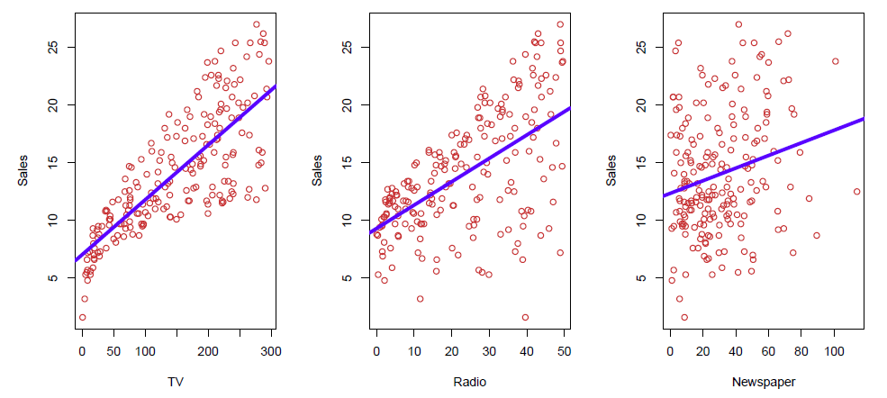
Shown are Sales vs TV, Radio and Newspaper, with a blue linear-regression line fit separately to each.
Can we predict Sales using these three?
Perhaps we can do better using a model
\[ Sales \approx f(TV, Radio, Newspaper) \]
Here Sales is a response or target that we wish to predict.
We generically refer to the response as \(Y\).
TV is a feature, or input, or predictor; we name it \(X_1\).
Likewise name Radio as \(X_2\), and so on.
We can refer to the input vector collectively as
\[ \mathbf{X}=\begin{pmatrix} X_{1}\\ X_{2}\\ X_{3}\\ \end{pmatrix} \]
- In the case of output (\(Y\)) and input (\(X\)) variables (supervised learning) the situation reduces to finding a function \(f\) so that we can write
\[ Y=f(X)+\epsilon \]
where \(\epsilon\) captures measurement errors and other discrepancies.
- Here \(f\) is a fixed but unknown function, \(X = (X_1, X_2 , X_3)\) is a set of predictors, and \(\epsilon\) is a random error term, which is independent of \(x\) and averages to zero.
What is \(f(X)\) good for?
With a good \(f\) we can make predictions of \(Y\) at new points \(X=x\).
We can understand which components of \(X=(X_1, X_2, \ldots, X_p)\) are important in explaining \(Y\), and which are irrelevant.
- e.g. Seniority and Years of Education have a big impact on Income, but Marital Status typically does not.
Depending on the complexity of \(f\), we may be able to understand how each component \(X_j\) of \(X\) affects \(Y\).
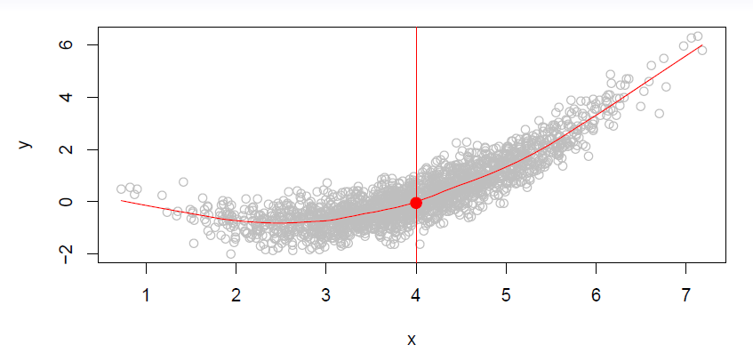
- Is there an ideal \(f(X)\)?
- In particular, what is a good value for \(f(X)\) at any selected value of \(X\), say \(X=4\)?
- There can be many \(Y\) values at \(X=4\).
- A good value is
\[ f(4)=E(Y|X=4) \]
\(f(Y|X=4)\) means expected value (average) of \(Y\) given \(X=4\).
This ideal \(f(x)=E(Y|X=x)\) is called the regression function.
- is also defined for vector \(X\); e.g.
\[ f(x)=f(x1,x2,x3)=E(Y|X_1=x_1, X_2=x_2, X_3=x_3) \]
The approach formalized by equation is general in statistics.
That is, when there is variability on \(Y\), then we can try to split the total variability in explained or systematic component and unexplained (or unsystematic, or random noise) component, i.e.,
\[ Y = systematic + unsystematic \]
- In equation \(f(X)\) is the systematic part and \(\epsilon\) is the unsystematic part.
Goal
The goal is to estimate \(f\) from available data.
The book by James et al. actually defines statistical learning to a set of approaches for estimating \(f\).
Two main reasons for estimating \(f\) is prediction and inference.
2.1.1 Prediction
- Given an estimate \(\hat{f}\) of \(f\) and inputs \(X\), because the error term \(\epsilon\) averages to zero, we can predict \(Y\) as
\[ \hat{Y}=\hat{f}(X) \]
- In prediction context \(\hat{f}\) is often treated as a black box, i.e., the exact form of \(\hat{f}\) is not of concern, provided it yields accurate predictions for the outcome \(Y\),
\[ input \rightarrow black box \rightarrow prediction \]
Example: wages and tenure
- Suppose the relationship of wage and tenure (i.e., the number of years at the current employer) is
\[ log(wage) = 2.3 + 0.025 tenure − 0.00045 tenure2 + \epsilon \]
where \(\epsilon \sim N(0, \sigma^2)\) with \(\sigma = 0.025\).
- Below are depicted observations from a sample of 50 observations (left panel) and the underlying \(f\) and deviations of the observed values (right panel).
tenure <- 0:40 # years at the same employer
b0 <- 2.3; b1 <- .025; b2 <- -.00045 # model parameters
n <- 50 # sample size
sigma <- .025 # standard deviation of the error term
set.seed(seed = 111) # initialize random generator seed for exact replication of the example
x <- sample(tenure, size = n, replace = TRUE); x2 <- x^2
e <- rnorm(n = n, sd = sigma) # error term 'epsilon'
logwage <- b0 + b1 * x + b2 * x^2 + e
par(mfrow = c(1, 2)) # split garph window
plot(x = x, y = exp(logwage), col = "red", pch = 20,
xlab = "Tenure", ylab = "Wage per Hour")
curve(expr = exp(b0 + b1 * x + b2 * x^2), from = 0, to = 40,
ylim = c(9, 15),
xlab = "Tenure", ylab = "Wage per Hour") # plot the underlying relation
points(x = x, y = exp(logwage), col = "red", pch = 20) # add observations
segments(x0 = x, y0 = exp(logwage), x1 = x, y1 = exp(b0 + b1 * x + b2 * x^2),
col = "blue") # connect observations and the underlying relation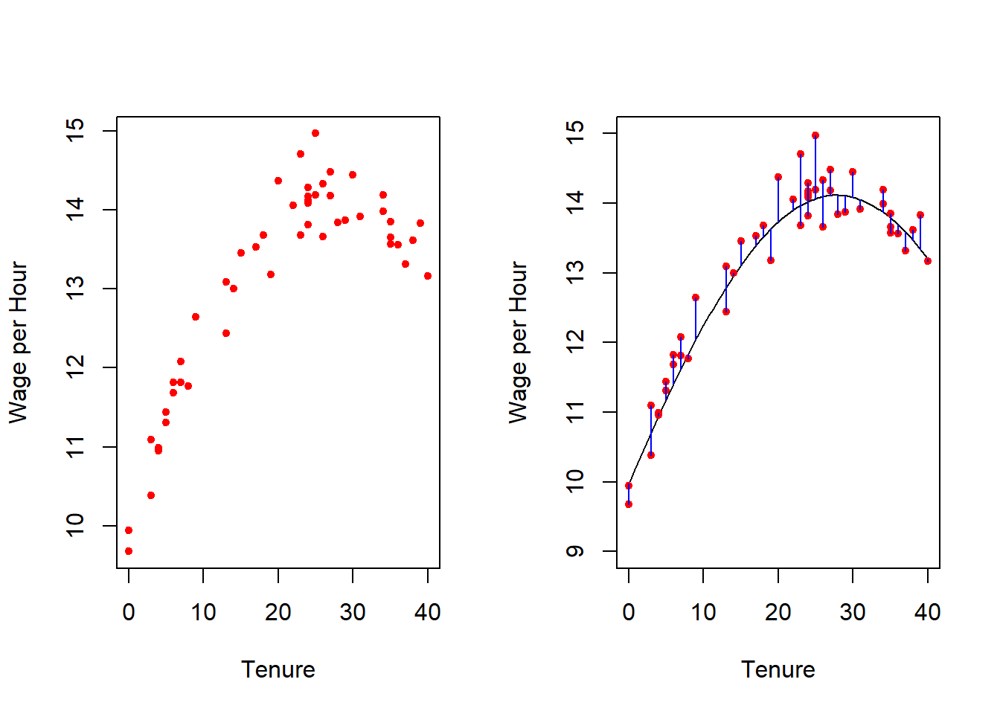
in which the first component is due to the estimation and the second term due to the random error that by definition cannot be predicted by \(X\).
The ideal or optimal predictor of \(Y\) with regard to mean-squared prediction error: \(f(x)=E(Y|X=x)\) is the function that minimizes \(E[(Y-f(X))^2|X=x]\) over all functions \(f\) at all points \(X=x\).
The estimation error \(f(x)-\hat{f}(x)\) can be potentially reduced by using the most appropriate statistical technique to estimate \(f\).
- Therefore, this error is called reducible error.
Even with a perfect estimate \(\hat{f}=f\), \(\hat{y}\) deviates from \(y\) because of \(\epsilon\).
- This error, \(\epsilon=Y-f(x)\), is called irreducible error.
- I.e. even if we knew \(f(x)\), we would still make errors in prediction, since at each \(X=x\) there is typically a distribution of possible \(Y\) values.
Given an estimate \(\hat{f}\) of \(f\), we can decompose the prediction error \(Y − \hat{Y}\) as
\[ Y-\hat{Y}=(f(X)-\hat{f}(X))+\epsilon \]
- Assuming for a moment that both \(\hat{f}\) and \(X\) are fixed, then
\[ \begin{aligned} E(Y−\hat{Y}|X=x)^2 &= E[f(x) + \epsilon− \hat{f}(x)]^2 \\ &= \underbrace{[f(x) − \hat{f}(x)]2}_{Reducible}+\underbrace{var(\epsilon)}_{Irreducible} \end{aligned} \]
- Here, \(E(Y − \hat{Y})^2\) is the expected squared prediction error (difference of actual value and its prediction), and \(var(\epsilon)\) is the variance of the error term.
2.1.2 Inference
Inference problems are related to understanding the way \(y\) changes as a function of \(\mathbf{X} = (X_1, \ldots , X_p)\), i.e., inference relies on model based approaches.
As a results, unlike in prediction, \(f\) cannot be considered any more as a black box.
Rather, the explicit form is of primary interest to find out
- predictors that are associated with the response,
- the particular relationship between the response with each predictor,
- the functional form of \(f\) (linear or more complicated).
Of course the interest can be a combination of these inferential an prediction purposes.
Example: Advertising data set
- Below are plots of sales and budgets for TV, radio, and newspaper advertising.
library("ISLR2") # ISLR package (use install.package if needed to install the package)
library(help = ISLR2) # base infor about the library
## as the Advertising data set does not seem to be included into the library, download it over internet
adv <- read.csv(file = "https://www.statlearning.com/s/Advertising.csv") # read over internet
head(adv) # first few lines## X TV radio newspaper sales
## 1 1 230.1 37.8 69.2 22.1
## 2 2 44.5 39.3 45.1 10.4
## 3 3 17.2 45.9 69.3 9.3
## 4 4 151.5 41.3 58.5 18.5
## 5 5 180.8 10.8 58.4 12.9
## 6 6 8.7 48.9 75.0 7.2summary(adv) # key summary statistics## X TV radio newspaper
## Min. : 1.00 Min. : 0.70 Min. : 0.000 Min. : 0.30
## 1st Qu.: 50.75 1st Qu.: 74.38 1st Qu.: 9.975 1st Qu.: 12.75
## Median :100.50 Median :149.75 Median :22.900 Median : 25.75
## Mean :100.50 Mean :147.04 Mean :23.264 Mean : 30.55
## 3rd Qu.:150.25 3rd Qu.:218.82 3rd Qu.:36.525 3rd Qu.: 45.10
## Max. :200.00 Max. :296.40 Max. :49.600 Max. :114.00
## sales
## Min. : 1.60
## 1st Qu.:10.38
## Median :12.90
## Mean :14.02
## 3rd Qu.:17.40
## Max. :27.00##
## scatter plots
par(mfrow = c(1, 3))
plot(x = adv$TV, y = adv$sales, pch = 20, xlab = "TV budget (1,000 USD)",
ylab = "Sales (1,000 units)", col = "steel blue") # sales and TV advertising
abline(lm(sales ~ TV, data = adv), col = "blue", lwd = 2) # OLS-line
plot(x = adv$radio, y = adv$sales, pch = 20, xlab = "Radio budget (1,000 USD)",
ylab = "Sales (1,000 units)", col = "steel blue") # sales and radio advertising
abline(lm(sales ~ radio, data = adv), col = "blue", lwd = 3) # OLS-line
plot(x = adv$newspaper, y = adv$sales, pch = 20, xlab = "Newspaper budget (1,000 USD)",
ylab = "Sales (1,000 units)", col = "steel blue") # sales and TV advertising
abline(lm(sales ~ newspaper, data = adv), col = "blue", lwd = 2) # OLS-line
2.1.3 Estimating \(f\)
How to estimate \(f\)
Typically we have few if any data points with \(X=4\) exactly.
So we cannot compute \(E(Y|X=x)\)!
Relax the definition and let
\[ \hat{f}(x)=Ave(Y|X\in N(x)) \]
where \(N(x)\) is some neighborhood of \(x\).
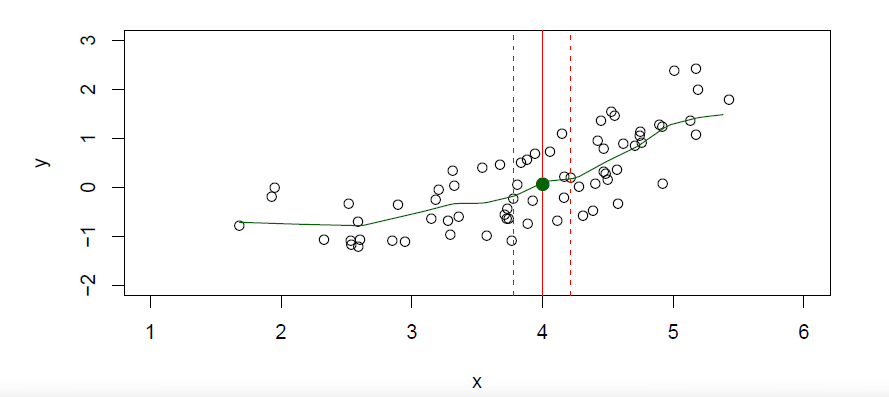
Nearest neighbor averaging can be pretty good for small \(p\)
- i.e. \(p \le 4\) and large-ish \(N\).
We will discuss smoother versions, such as kernel and spline smoothing later in the course.
Nearest neighbor methods can be lousy when \(p\) is large.
- Reason: the *course of dimensionality$. Nearest neighbors tend to be far away in high dimensions.
- We need to get a reasonable fraction of the \(N\) values of \(y_i\) to average to bring the variance down - e.g. \(10\%\).
- A \(10\%\) neighborhood in high dimensions need no longer be local, so we lose the spirit of estimating \(E(Y|X=x)\) by local averaging.
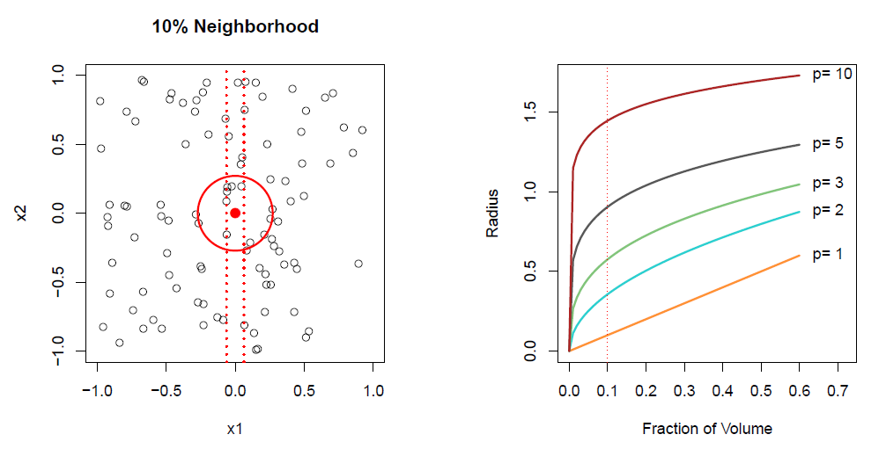
- Broad categories of estimation methods are: parametric and non-parametric.
Parametric methods
- The linear model is an important example of a parametric model:
\[ f_L(X)=\beta_0 +\beta_1X_1 +\beta_2X_2+\cdots +\beta_pX_p \]
A linear model is specified in terms of \(p+1\) parameters \(\beta_0, \beta_1, \ldots , \beta_p\).
We ’estimate the parameters by fitting the mod’el to training data.
Although it is almost never correct, a linear model often serves as a good and interpretable approximation to the unknown true function \(f(X)\).
A linear model \(\hat{f}_L(X)=\hat{\beta}_0+\hat{\beta}_1X\) gives a reasonable fit here
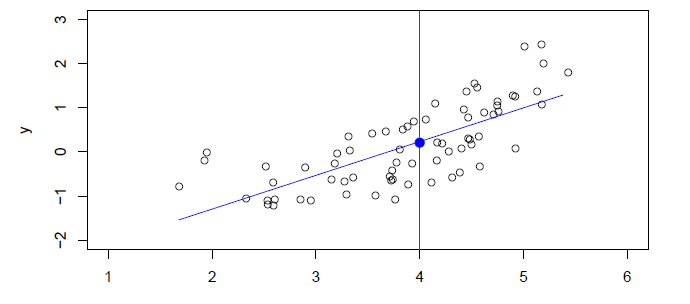
- A quadratic model \(\hat{f}_Q(X)=\hat{\beta}_0+\hat{\beta}_1X + \hat{\beta_2}X^2\) fits slightly better.
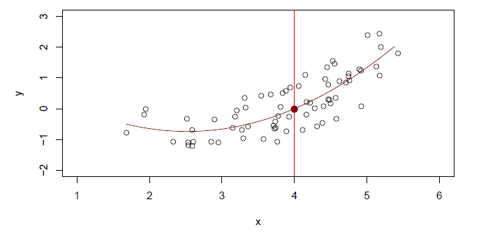
Simulated example
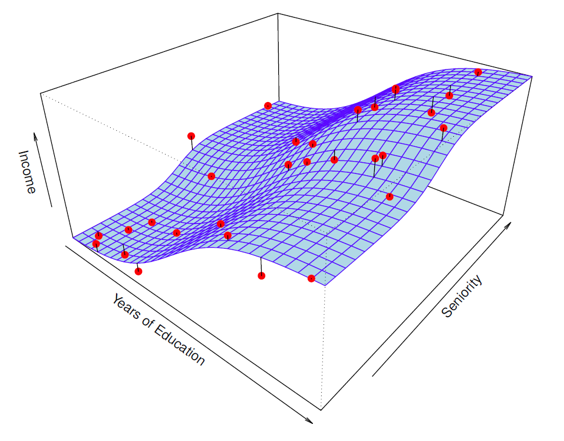
- Red points are simulated values for income from the model
\[ income=f(education, seniority)+\epsilon \]
\(f\) is the blue survace.
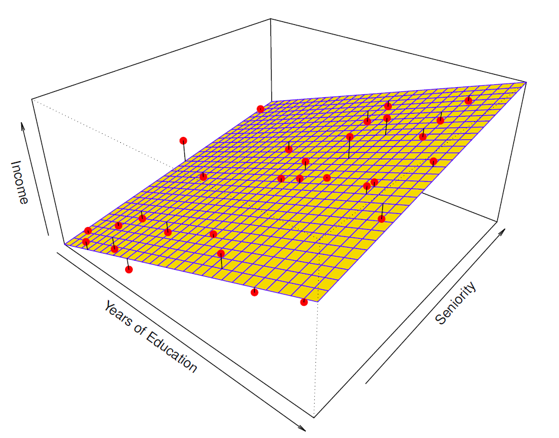
- Linear regression model fit to the simulated data.
\[ \hat{f}_L(education, seniority)=\hat{\beta}_0+\hat{\beta}_1\times education+\hat{\beta}_2\times seniority \]
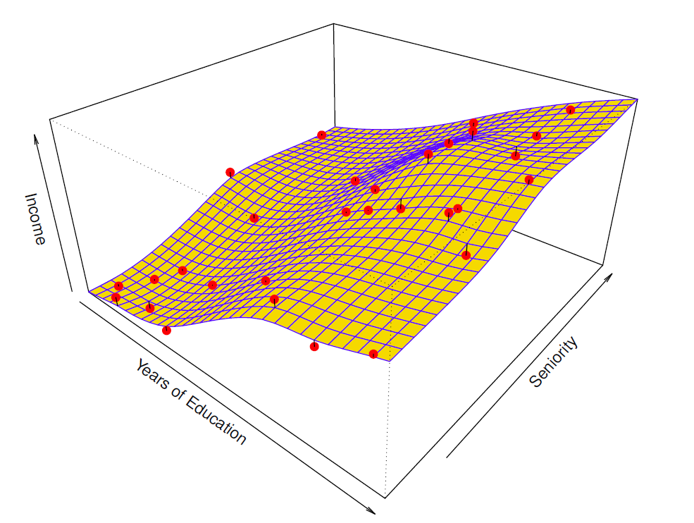
More flexible regression model \(\hat{f}_s(education, seniority)\) fit to the simulated data.
Here we use a technique called a thin-plate spline to fit a flexible surface.
We control the roughness of the fit (Chapter 7).
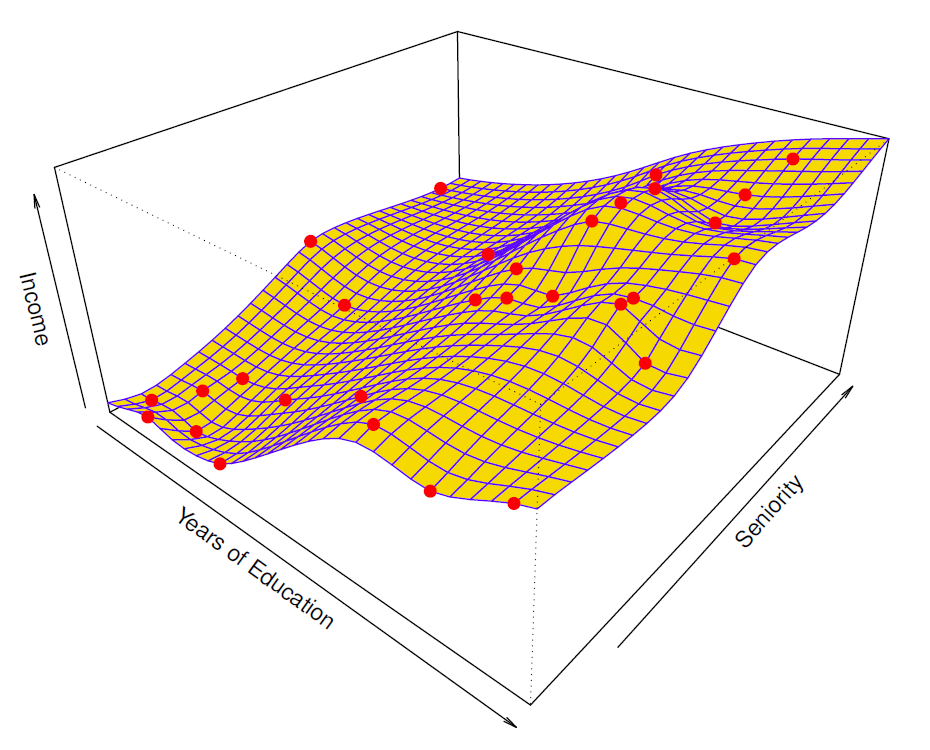
Even more flexible spline regression model \(\hat{f}_S(education, seniority)\) fit to the simulated data.
Here the fitted model makes no errors on the training data!
Also known as overfitting.
Back to the parametric model
Given \(n\) observations on \(x\) and \(y\), \((x_1, y_1), \ldots ,(x_n, y_n)\), where \(x_i = (x_{i1}, x_{i2}, \ldots , x_{ip})\), \(i = 1, \ldots , n\) (the \(i\)th observation).
\(x_{ij}\) denotes the value for the \(i\)th observation and the \(j\)th variable, (\(i = 1, \ldots , n, j = 1, \ldots , p\)).
Training data consist of \(n\) observations that is used to teach or train how to estimate the unknown function \(f\), i.e., to find a function \(\hat{f}\), such that \(y \approx \hat{f}(x)\) for any observation \((x, y)\).
Generally parametric methods involve two steps:
- Specification: Make assumption to specify the functional form of \(f\), e.g. linear in \(x\), so that
\[ f(x) = \beta_0 + \beta_1x_1 + \cdots + \beta_px_p \]
where the intercept \(\beta_0\) and the slope coefficients \(\beta_j\), \(j = 1, \ldots , p\) are unknown parameters of the model.
- Estimation: After the model has been specified, the training data is used to fit or train the model.
In the above linear case this involves estimating the unknown \(p + 1\) parameters \(\beta_0, \beta_1, \ldots , \beta_p\) on the basis of sample observations (training data).
The most common method here is the ordinary least squares (OLS).
Assuming parametric model for \(f\) simplifies estimation of \(f\) to estimation of a set of parameters, such as the above \(β\)-coefficients.
Parametric model are fairly restrictive; Goodness of the parametric model depends how well the parametric specification matches the true underlying \(f\).
- A poor match results to a poor fit.
Flexiple models can fit different functional forms of \(f\).
- Flexible models may result easily to overfitting, which means they start to follow also the patterns of the noise component in the training data set.
Non-parametric methods
Non-parametric methods do not make explicit assumptions about the functional form of \(f\).
They seek to an estimate of \(f\) that gets as close to the data points as possible without being too rough or too wiggly.
These methods avoid the mis-specification problem present in the parametric approach.
Non-parametric approaches need typically a large number of observation as they virtually do not make any assumptions of the functional form of \(f\).
2.1.4 Prediction Accuaracy and Model Interpretability
The more functional forms of \(f\) a method allows, the more flexible it is. The cost is that highly flexible models are harder to interpret.
For example, linear regression is fairly inflexible but quite interpretative, while for example different spline methods or full non-linear methods like support vector machines can be highly flexible but hard to interpret.
If the goal is inference, simple and relatively inflexiple approaches are preferred.
If the goal is (purely) prediction, more flexible approaches can lead to better predictions.
- This, however, is not always the case!
In Summary
- Prediction accuracy versus interpretability
- Linear models are easy to interpret; thin-plate splines are not.
- Good fit versus over-fit or under-fit
- How do we know when the fit is just right?
- Parsimony versus black-box
- We often prefer a simpler model involving fewer variables over a black-box predictor involving them all.
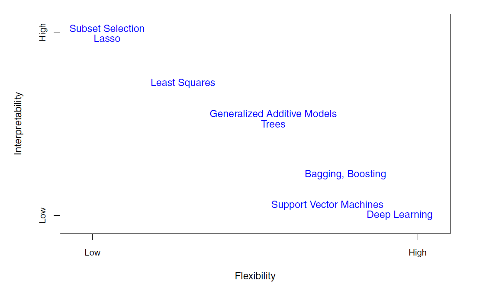
2.2 Assessing Model Accuracy
2.2.1 Measuring the Quality of Fit
Suppose we fit a model \(\hat{f}(x)\) to some training data \(Tr=\{x_i,y_i\}_1^N\), and we wish to see how well it performs.
In regression setting one of the most commonly used measured of model performance measures is the mean square error (MSE),
We could compute the average squared prediction error over \(Tr\):
\[ MSE_{Tr}=Ave_{i\in Tr}(y_i-\hat{f}(x_i))^2=\frac{1}{N}\sum_{i=1}^n(y_i-\hat{f}(x_i))^2 \]
This may be biased toward overfit models.
- Instead we should, if possible, comput it using fresh test data \(Te=\{x_i,y_i\}_1^M\);
\[ MSE_{Te}=Ave_{i\in Te}(y_i-\hat{f}(x_i))^2=\frac{1}{M}\sum_{i=1}^M(y_i-\hat{f}(x_i))^2 \]
where \(\hat{f}(x_i)\) is the prediction of the \(i\)th observation.
Training MSE: computed from the training sample (overstates the accuracy of \(\hat{f}\)).
Test MSE: computed form the test sample (out of sample) (gives realistic view of the accuracy of \(\hat{f}\)).
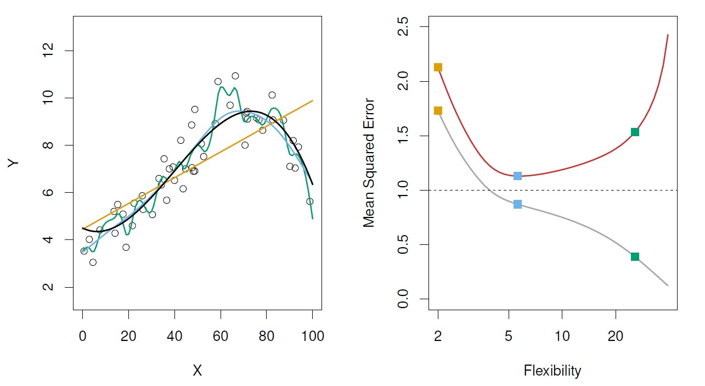
Figure: Model accuracy and quality of fit.
Left: underlying true \(f\) (black line), observations (open dots), linear regression (orange), and two spline fits (blue and green), observations.
Right: Training MSE (grey), test MSE (red), Square represent the three training and test MSEs for the fits in the left-hand panel.
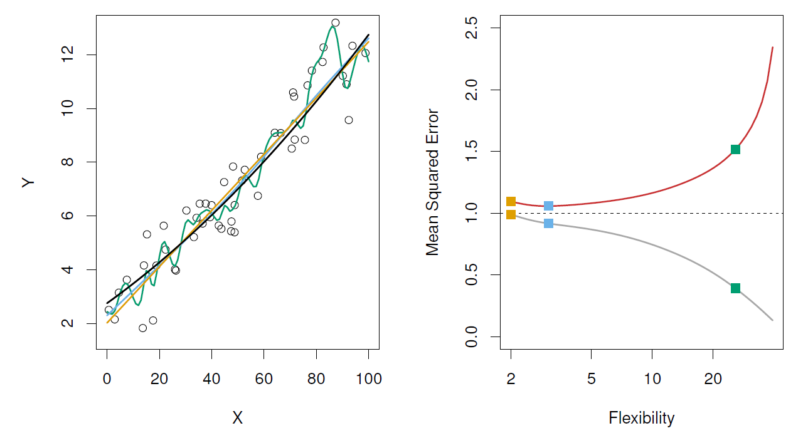
- Here the truth is smoother, so the smoother fit and linear model to really well.
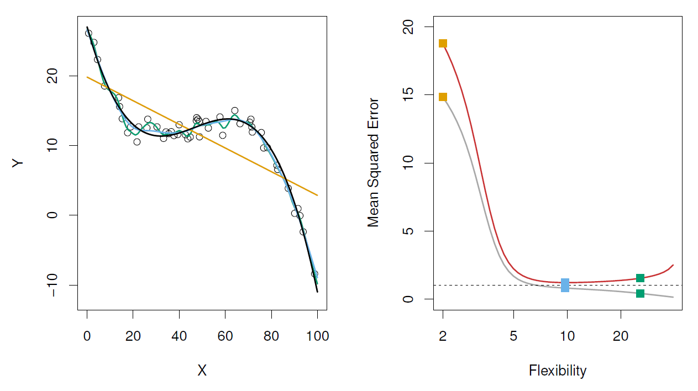
- Here the truth is wiggly and the noise is low, so the more flexible fits do the best.
If test data is not available, cross-validation and bootstrapping methods can be used to estimate MSE from the training data.
2.2.2 Bias-Variance Trade-off
Suppose we have fit a model \(\hat{f}(x)\) to some training data \(Tr\), and let \((x_0,y_0)\) be a test observation dwawn from the population.
If the true model is \(Y=f(x)+\epsilon\) (with \(f(x)=E(Y|X=x)\)).
Given test observation \((y_0, x_0)\), the expected test MSE, \(E(y_0 − \hat{f}(x_0))^2\) decomposes as
\[ \begin{aligned} E(y_0-\hat{f}(x_0))^2 &=\underbrace{E(\hat{f}(x_0)-E[\hat{f}(x_0)]^2}_{varience}+\underbrace{[E(\hat{f}(x_0)-f(x_0))]^2}_{Bias}+\underbrace{E(ε^2)}_{Error\ variance}\\ &= var(\hat{f}(x_0))+[Bias(\hat{f}(x_0))]^2+var(\epsilon) \end{aligned} \]
The variance, \(var(\hat{f}(x_0))\), refers to the variation that would be the result of estimating \(f\) over and over again form different training samples (repeated sampling principle).
The bias, \(Bias(\hat{f}(x_0))\), refers to the average deviation of \(\hat{f}(x_0)\) from \(f(x_0)\) in these repeated samples.
- I.e., the average approximation error \(\hat{f}(x_0) − f(x_0)\).
Flexible methods tend to have higher variance and lower bias, while non-flexible methods tend to have higher bias and lower variance.
Thus, in practical application we need to balance with this bias-variance trade-off and try to find a solution that minimizes the model based total variability
\[ var(\hat{f}(x_0)) + [Bias(\hat{f}(x_0))]^2 \]
Note that the lower bound of MSE is \(var(\epsilon)\).
Bias-variance trade-off for the three examples
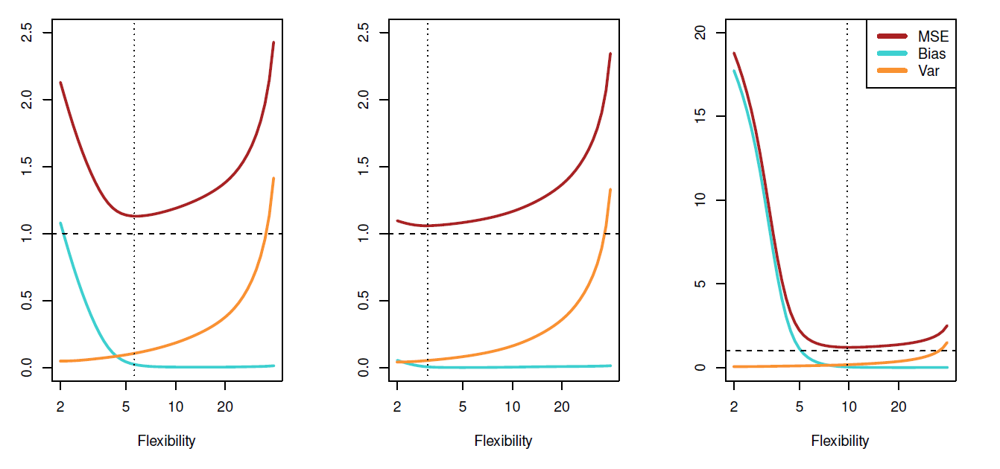
2.2.3 Classification Problems
- Here the response variable \(Y\) is qualitative - e.g. email is one of \(C=(spam, ham)\) (ham=good email), digit class is one of \(C=\{0,1,\ldots,9\}\).
-Goals: - Build a classifier \(C(X)\) that assigns a class label from \(C\) to a future unlabeled observation \(X\). - Assess the uncertainty in each classification. - Understand the roles of the differenet predictors among $X=(X_1,X_2, , X_p).
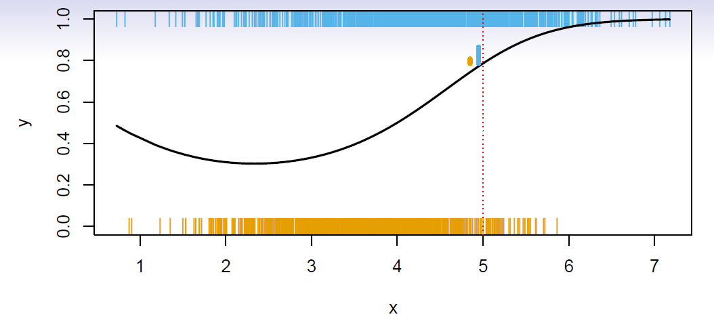
Is there an ideal \(C(X)\)?
Suppose the \(K\) elements in \(C\) are numbered \(1,2, \ldots,K\).
Let
\[ p_k(x)=Pr(Y=k|X=x), \,\,\, k=1,2,\ldots,K \]
These are the conditional class probabilities at \(x\); e.g. see little barplot at \(x=5\).
Then the Bayes optimal classifier at \(x\) is
\[ C(x)=j \,\,\, if \,\,\, p_j(x)=max\{p_1(x),p_2(x),\ldots,p_K(x)\} \]
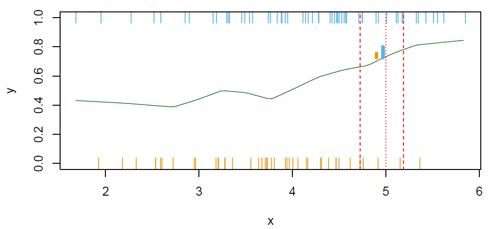
Nearest-neighbor averaging can be used as before.
Also breaks down as dimension grows.However, the impact on \(\hat{C}\) is less than on \(\hat{p}_k(x)\), \(k=1,\ldots,K\).
Classification setting
In classification \(y_i\) is qualitative (indicating the class label), so to transfer the above bias-variance trade-off need some modification.
One of the most common approach for quantifying the accuracy of \(\hat{C}(x)\) is the training misclassification error rate, computed as
\[ Err_{tr}=Ave_{i\in Tr}I(y_i\ne \hat{C}(x_i))=\frac{1}{N}\sum_{i=1}^NI(y_i \ne \hat{y}_i) \]
in which \(I(y_i \ne \hat{y}_i)\) is an indicator variable equaling one if \(y_i \ne \hat{y}_i\) (i.e., \(y_i\) predicts an incorrect class label) and zero if \(y_i = \hat{y}_i\) (i.e., predicts a correct class label).
As a results \(I(y_i = \hat{y}_i) = 0\) indicates correct classification of the \(i\)th observation; otherwise it is misclassified.
The test error with a test data \(y_0\) is
\[ Err_{te}=Ave_{i\in Te}I(y_i\ne \hat{C}(x_i))=\frac{1}{M}\sum_{i=1}^MI(y_i \ne \hat{y}_i) \]
A good classifier is one for which the test error rate is smallest.
The Bayes classifier (using the true \(p_k(x)\)) has smallest error (in the population).
- It turns out that it is minimized by a classifier that assigns each observation to the most likely class, given its predictor values.
- That is, assign a test observation with predictor \(x_0\) to the class \(j\) for which
\[ P(Y = j|X = x_0) \]
is largest.
Support-vector machines build structured models for \(C(x)\).
We will also build structured models for representing the \(p_k(x)\).
- E.g. Logistic regression, generalized additive models.
Example: Bayes classifier
In a two-class problem \(y\) assumes two possible values, e.g. \(1\) for class one and \(2\) for calss two.
Given predictor value \(x_0\), the Bayes rule is then to assign class one if \(P(y = 1|x_0) > 0.5\) and class two otherwise.
The borderline at which \(P(y = 1|x_0) = P(y = 0|x_0) = 0.5\) is the Bayes decision boundary.
Figure below plots a simulation data set with \(x_0 = (x_1, x_2)^T\).
- The orange and blue circles correspond to training observations (100 observations from each of the two class).
- The orange shaded set reflects points where \(P(y = orange|x) > 50\%\), the blue region where the probability is below \(50\%\), and the purple dashed line the Bayes decision boundary where the probability is exactly \(50\%\).

The Bayes classifier produces the lowest possible test error rate, called Bayes error rate.
The largest error rate at \(x = x_0\) is \(1 − max_j P(y = j|x = x_0)\).
The overall Bayes error rate is
\[ 1-E(max_{j} P(y=j|x)) \]
where the expectation is over possible \(x\)-values.
The Bayes error rate is analogous to the irreducible error rate, discussed earlier.
Unfortunately the conditional distribution of \(y\) given \(x\) is unknown, therefore Bayes classifier cannot be computed.
- Bayes classifier serves as a gold standard against which other classifiers are compared.
Because the conditional distribution of the Bayes classifier is unknown, the best one can do is to estimate it, and classify a given observation to the class with highest estimated probability.
- One such popular method is the K-nearest neigbors (KNN) classifier.
K-Nearest neighbor
Given a positive integer \(K\) and test observation \(x_0\), the KNN identifies the \(K\) points in the training data that are closest to \(x_0\), denote this set of K points by \(N_0\).
Next estimate the conditional probability for class \(j\) as the fraction of points in \(N_0\) whose response value matches class \(j\)
\[ P(y = j|x = x_0) = \frac{1}{K}\sum_{i\in N_0} I(y_i=j) \]
- Finally, KNN applies Bayes rule and classifies the test observation \(x_0\) to the class with the highest probability.
Example: KNN
- Suppose \(K = 3\) and out of three observations that are closest to the observation \(x_0\), two belong to class 1 and one to class 2.
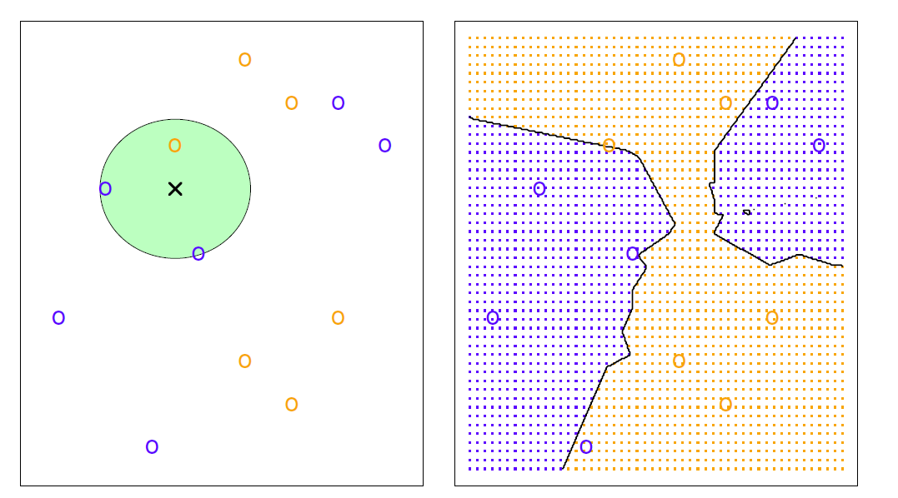
- The probabilities are then \(2/3\) for class 1 and \(1/3\) for class 2.
- So on the basis of \(x_0\) the observation is classified into class 1.
The major problem with KNN is the selection of \(K\), which will be addressed later.
Choosing the correct level of flexibility (i.e., \(K\)) is critical to the success.
Small \(K\) implies more flexibility and a small training error (in the extreme of \(K = 1\) the training error is zero), but the test error may be high.
Large \(K\) implies less flexibility and depending on the non-linearity of the Bayes boundary can increase also training error as demonstrated by the figures below.
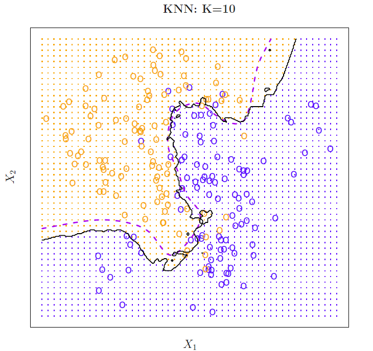
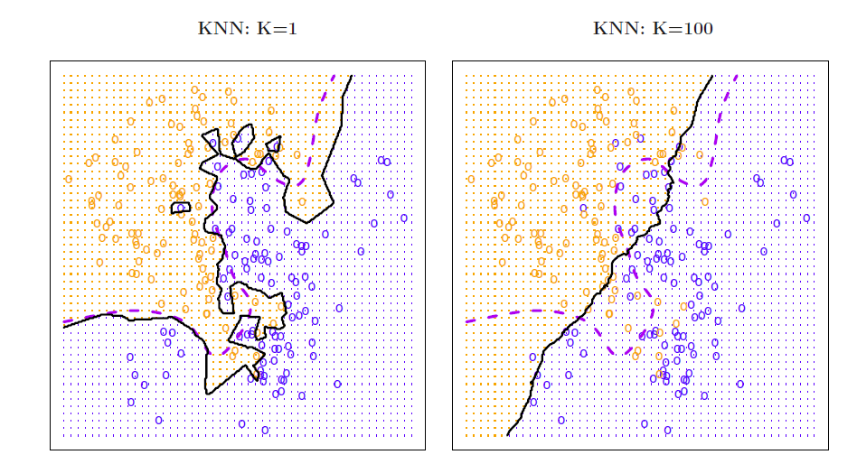
Solid curve indicates the KNN decision boundary and dashed purple line the Bayesian decision boundary.
- KNN training error rate
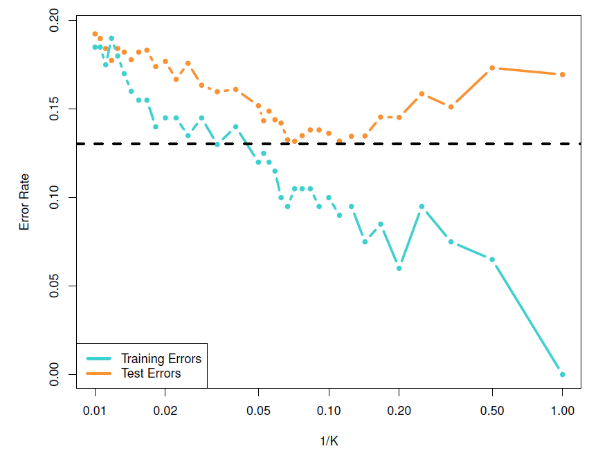